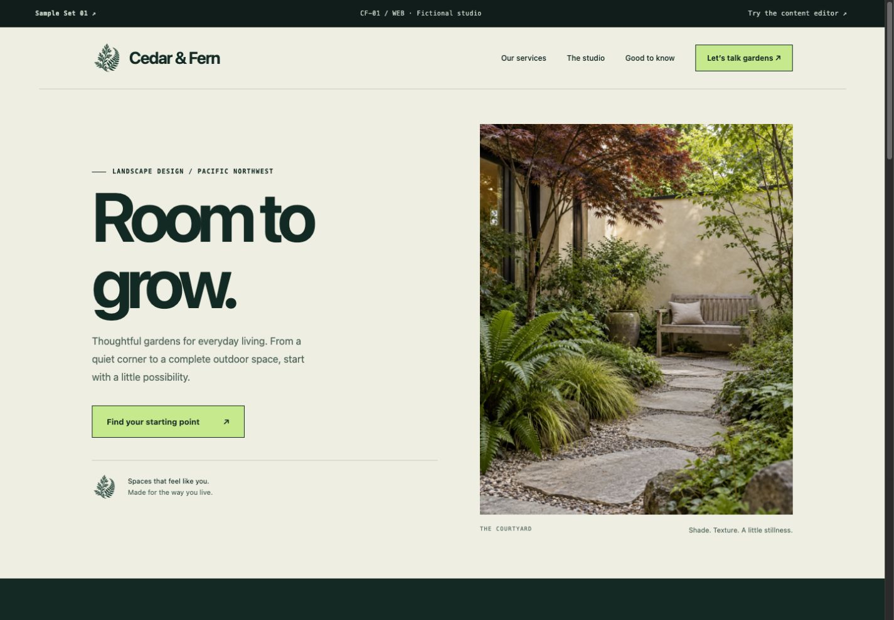
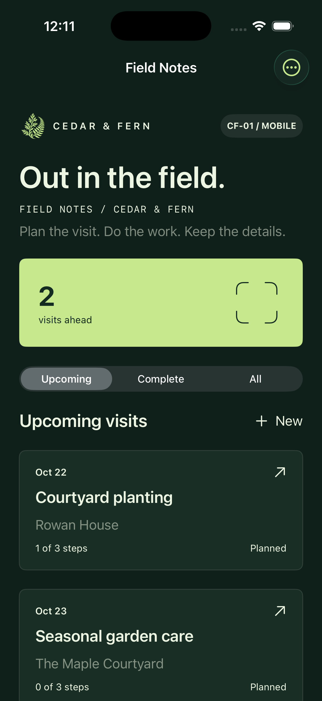
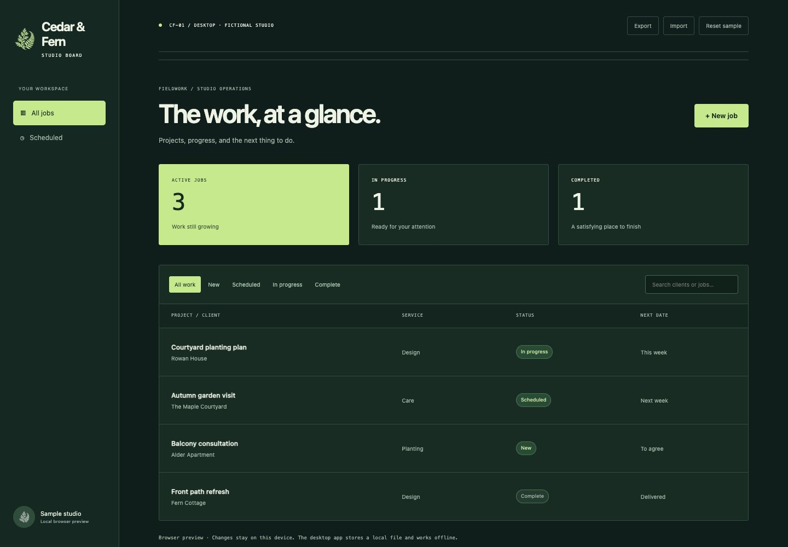

Cedar & Fern
A service-business website with an editable content preview and inquiry flow.
SAMPLE SET 01 / CF-01
Three platforms. One considered direction. Forest ink, warm paper, and a few details worth borrowing.
A reference you can put in a brief.
CF-01 / Web. CF-01 / Mobile. CF-01 / Desktop. Pick the functionality from one, the style from another, and tell us what to keep.

A service-business website with an editable content preview and inquiry flow.

A native iPhone visit planner with checklists, notes, and portable exports.

A working job board. Search clients, update progress, and keep a local copy.
Fictional examples with MIT source. Each works independently with local data. Mobile capture is from the iPhone simulator; there is no store download. The mobile browser demo recreates the key flows; it is not an iOS emulator. The desktop browser preview is available above, with a native macOS setup in the repository. We scope production integrations and your changes together.
Discuss your version ↗Click any screen to try it. Mobile demos adapt the native app’s key flows for the browser; device features are not included. Mobile edits reset when reloaded.